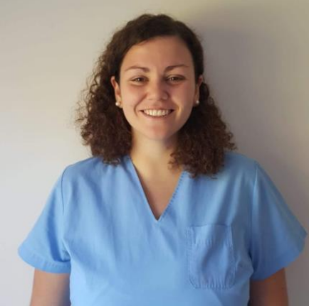

Emilia Macarena Spaini
- Fecha de nacimiento: 2/11/1994
- Nacionalidad: Argentina
- Estado civil: Soltera
-
Dirección: Ruta 192 Km 6,5, Open Door, Luján. Buenos
Aires
-
Contacto:
- macarenaspaini@gmail.com
- 011-1540716969

Educación
Académica
-
Facultad de Ciencias Biomédicas, Universidad Austral
[2019] - Medica
-
Facultad de Ciencias Biomédicas, Universidad Austral
[2019] - Curso de habilidades practicas
-
Facultad de Ciencias Biomédicas, Universidad Austral
[2017] - Curso de pedagogía
-
Facultad de Ciencias Biomédicas, Universidad Austral
[2017] - Metodología de la Investigación
-
Hermanos Maristas de Luján [2012] - Bachillerato en
Ciencias Naturales
Idiomas
Indíquese competencia en una escala del 1 al 5 (1-excelente;
5-básico)
Herramientas Informáticas
- Manejo de paquete Office
-
Manejo de herramientas de la calidad de investigación
científica (PubMed, Clinical Key, UptoDate)
Actividades Extracurriculares
-
Miembro de la Sociedad de ex alumnos Hermanos Maristas
-
Presidente del centro de estudiantes de la Facultad de
Ciencias Biomédicas
-
Miembro de la Federación estudiantil de la Universidad
Austral
Aptitudes principales
- Buena intercomunicación personal
- Aptitud para integrarse a grupos de trabajo
- Experiencia en investigación de nuevos datos
-
Experiencia en traducción simultánea y traducción de
textos científico
Experiencia laboral
-
- Fecha:Abril 2014- Marzo 2015
- Lugar: Arbue Services S.A
- Cargo: Profesora de inglés
-
Descripción:
-
Dictado de inglés básico para empleados
-
Dictado de inglés técnico para empleados
-
- Fecha:Marzo 2017- Diciembre 2019
-
Lugar:Facultad de Ciencias Biomédicas,
Universidad Austral
- Cargo:Ayudante de Fisiología
-
Descripción:
- Dictado de actividades prácticas
-
Desarrollo y exposición de seminarios
-
Desarrollo de nuevas actividades
prácticas
-
- Fecha:Marzo 2018- Diciembre 2019
-
Lugar:Facultad de Ciencias Biomédicas,
Universidad Austral
- Cargo:Ayudante de Farmacología
-
Descripción:
- Dictado de actividades prácticas
-
- Fecha: Octubre 2020 - Actualidad
- Lugar: Hospital Austral
- Cargo: Resiente de Cardiología
- Descripción:
- Especialidad de 4 años en cardiología crítica y clínica